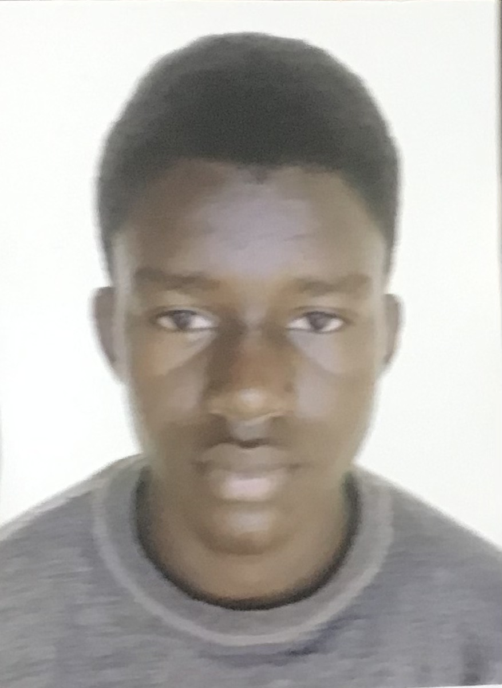

CURRICULUM VITAE
I-ETAT CIVIL
- NOM : AMADOU SOULEY
- PRENOM :ABDEL KADER
-
DATE ET LIEU DE NAISSANCE : 08 OCTOBRE 2003 a LOKOSSA
- SEXE : Masculin
- NATIONALITE : Beninoise
- CONTACT TELEPHONIQUE:69825928
II- FORMATION ACADEMIQUE
- 2021: Première année de licence en administration des reseaux informatique a L'ENEAM Cotonou
- 2021: Baccalauréat(SérieD)
- 2017: Brevet d'Etude du premier cycle(BEPC)
- 2013: Certificat d'Etude Primaire(CEP)
III-FORMATION PROFESSIONNELLES
- 2020-2021: formation en graphitisme design
- 2019-2020: formation en informatique
IV-ATOUTS
- Ponctualité,perseverance,discrétion
- Ouvert d'esprit,amour du travail bien fait
- Dynamisme,esprit d,equipe
V- LANGUES PARLEES ET ECRITES
- Langues parlées: francais,andlais,mina,fon
- Langues ecrites: francais,anglais
VI-LOISIRS
- Voyages,football,basket,karaté,musique
je certifie exact les renseignements ci-dessus mentionnés